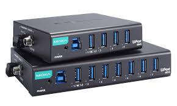

Hacker
Persona experta en computadoras que puede modificar sistemas y encontrar vulnerabilidades. Aunque a menudo se asocia con actividades ilegales, también puede tener un sentido positivo, como en el caso de los "hackers éticos".
Hardware
Conjunto de componentes físicos que conforman una computadora o dispositivo electrónico, como el teclado, la pantalla, la placa base, el disco duro, etc. Se diferencia del software, que son los programas y datos.
HTML
Lenguaje de marcado usado para crear y estructurar contenido en páginas web. Define elementos como encabezados, párrafos, enlaces, imágenes y tablas, entre otros.
Hub
Dispositivo que permite conectar varios equipos en una red local. Transmite los datos que recibe a todos los dispositivos conectados, lo que puede generar colisiones si muchos equipos envían información a la vez.
